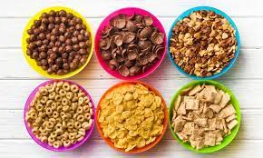

Cereal

A variety of bowls of cereal.
Cereal. The perfect way to start your day or end a long night when you just don't have the time (or dishes
washed) to make a nice, hearty meal or snack. Always there when you need that sweet kick, but don't want to
devour that tub of ice cream or those leftover cookies that went stale. Have it sweet or have the healthy stuff you act like you enjoy, either way cereal has your back until the end.
Ingredients
- cereal
- milk...and if you don't follow this order it will instantly go soggy.
Steps
- Grab yourself a nice, big bowl.
- Grab your favorite cereal and open it in a way that you can't properly seal it back for freshness.
- Grab a spoon.
- Grab the milk because you forgot you needed it.
- Pour way too much cereal into the bowl.
- Pour not enough milk into the bowl.
- Gently put your spoon into the bowl.
- EAT!